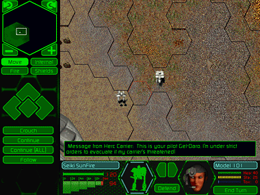

Control Herc movement from the main map or from the buttons along the left side of the screen. On the main map, position the cursor over the Herc you want to move. Note the cursor change. Click once to select the Herc. Then click once on the destination hex (you may need to scroll or zoom out on the map in order to do this). You will see the Herc’s path outlined. A green outline shows the Herc’s distance capability. Red outlines show hexes beyond that capability. Click again on the destination hex to move. If you click beyond a Herc’s range, it will only move the maximum distance for that turn. Use the Continue button to resume the same move for the next turn.
Reactor and battery power are displayed at the bottom of the screen. A Herc’s reactor is its power source for both movement and firing certain weapons. The reactor readout shows the amount of energy already consumed (red), the amount of energy about to be consumed in a potential move (yellow – this is only displayed when you first click on a destination hex), and the amount of unused energy (green). The numbers to the right indicate exact power levels. A Herc’s battery powers the firing of Energy, ELF, and some advanced technology weapons, as well as other devices after all reactor energy is consumed. The battery readout operates on a similar scale to the reactor, red shows the amount consumed and green shows remaining power.
If you prefer to use the buttons, select Move for movement controls. The only other options available here are the directional keys, Crouch, Continue, Continue All and Follow. Crouch can be used to minimize your Herc’s target area from an attacking Cybrid, especially if you are positioned on a higher elevation hex. The drawback is that being crouched while returning fire on defense greatly hinders the effectiveness of those weapons. Use Continue when you have selected the Herc’s movement path (and the red and green hex outlines are displayed). Then click on Continue to make the move. This control comes in handy if you run out of reactor energy during a previous turn, but want to continue with the same move later. With the Continue All control, you can lay down multiple Herc movement paths, then move the Hercs simultaneously. Follow allows you to tell the currently active Bioderm to follow the last Herc to move. This will allow you to give general movement orders to large numbers of units very quickly.
Using hotkeys, you can speed up the use of these commands or give them to multiple units simultaneously. Refer to your Quick Reference Card for a complete list of these commands.
